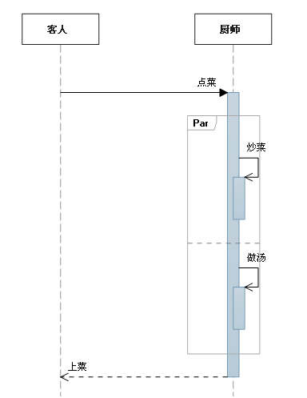

UML序列图总结(转)
2015-04-21 22:28 by 沧海一滴, 7 阅读, 0 评论, 收藏, 编辑
序列图主要用于展示对象之间交互的顺序。
序列图将交互关系表示为一个二维图。纵向是时间轴，时间沿竖线向下延伸。横向轴代表了在协作中各独立对象的类元角色。类元角色用生命线表示。当对象存在时，角色用一条虚线表示，当对象的过程处于激活状态时，生命线是一个双道线。
消息用从一个对象的生命线到另一个对象生命线的箭头表示。箭头以时间顺序在图中从上到下排列。
序列图中涉及的元素：
1. 生命线：
生命线名称可带下划线。当使用下划线时，意味着序列图中的生命线代表一个类的特定实例。

2. 同步消息
发送人在它继续之前，将等待同步消息响应。
3. 异步消息
在发送方继续之前，无需等待响应的消息。

4. 注释

5. 约束
约束的符号很简单；格式是: [Boolean Test]

6. 组合片段
组合片段用来解决交互执行的条件及方式。它允许在序列图中直接表示逻辑组件，用于通过指定条件或子进程的应用区域，为任何生命线的任何部分定义特殊条件和子进程。
常用的组合片段有：
抉择（Alt）
抉择用来指明在两个或更多的消息序列之间的互斥的选择，相当于经典的if..else..。
抉择在任何场合下只发生一个序列。 可以在每个片段中设置一个临界来指示该片段可以运行的条件。else 的临界指示其他任何临界都不为 True 时应运行的片段。如果所有临界都为 False 并且没有 else，则不执行任何片段。

选项（Opt）
包含一个可能发生或不发生的序列

循环（Loop）
片段重复一定次数。 可以在临界中指示片段重复的条件。

并行（Par）

下表列出了常用的组合片段：
|
片段类型 |
名称 |
说明 |
|
Opt |
选项 |
包含一个可能发生或可能不发生的序列。 可以在临界中指定序列发生的条件。 |
|
Alt |
抉择 |
包含一个片段列表，这些片段包含备选消息序列。 在任何场合下只发生一个序列。 可以在每个片段中设置一个临界来指示该片段可以运行的条件。 else 的临界指示其他任何临界都不为 True 时应运行的片段。 如果所有临界都为 False 并且没有 else，则不执行任何片段。 |
|
Loop |
循环 |
片段重复一定次数。 可以在临界中指示片段重复的条件。 Loop 组合片段具有“Min”和“Max”属性，它们指示片段可以重复的最小和最大次数。 默认值是无限制。 |
|
Break |
中断 |
如果执行此片段，则放弃序列的其余部分。 可以使用临界来指示发生中断的条件。 |
|
Par |
并行 |
并行处理。 片段中的事件可以交错。 |
|
Critical |
关键 |
用在 Par 或 Seq 片段中。 指示此片段中的消息不得与其他消息交错。 |
|
Seq |
弱顺序 |
有两个或更多操作数片段。 涉及同一生命线的消息必须以片段的顺序发生。 如果消息涉及的生命线不同，来自不同片段的消息可能会并行交错。 |
|
Strict |
强顺序 |
有两个或更多操作数片段。 这些片段必须按给定顺序发生。 |
有关如何解释序列的片段
默认情况下，序列图表明可能发生的一系列消息。 在运行的系统中，可能会出现您未选择显示在关系图上的其他消息。
以下片段类型可用于更改此释义：
|
片段类型 |
名称 |
说明 |
|
Consider |
考虑 |
指定此片段描述的消息列表。 其他消息可发生在运行的系统中，但对此描述来说意义不大。 在“Messages”属性中键入该列表。 |
|
Ignore |
忽略 |
此片段未描述的消息列表。 这些消息可发生在运行的系统中，但对此描述来说意义不大。 在“Messages”属性中键入该列表。 |
|
Assert |
断言 |
操作数片段指定唯一有效的序列。 通常用在 Consider 或 Ignore 片段中。 |
|
Neg |
否定 |
此片段中显示的序列不得发生。 通常用在 Consider 或 Ignore 片段中。 |